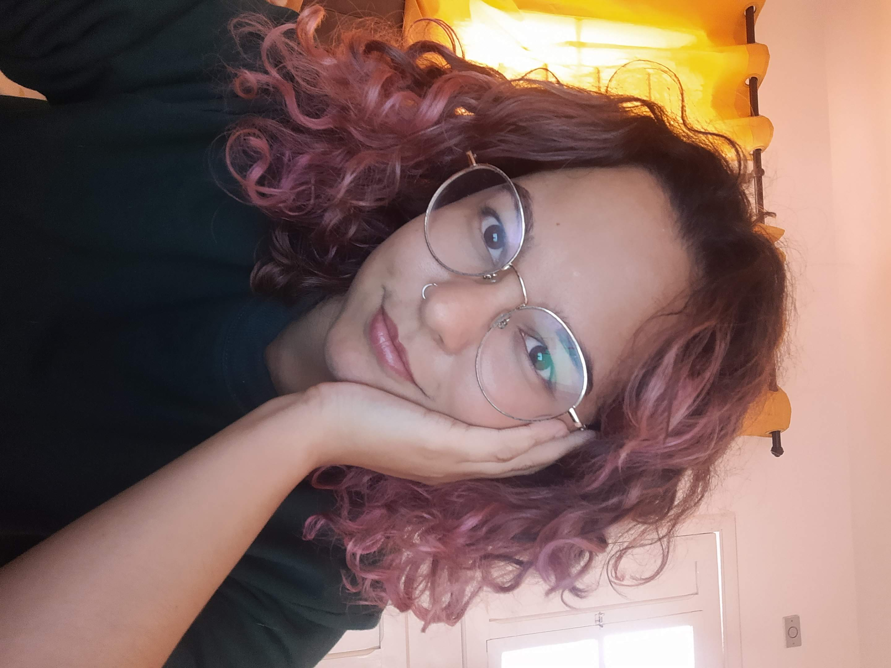

Me chamo Elisa, tenho quase 26 anos e amo conhecer lugares novos. Estou participando bootcamp da Generation e este é meu primeiro projeto em front-end, já havia feito outros com back-end completo. Acredito que tenho mais afinidade com o front, pois está ligado diretamente com a experiência do usuário e amo a área de UX, em especial Ux research.
Quem é a Elisa?
